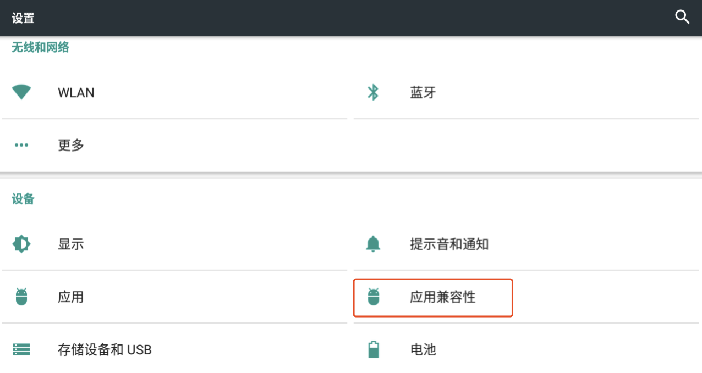
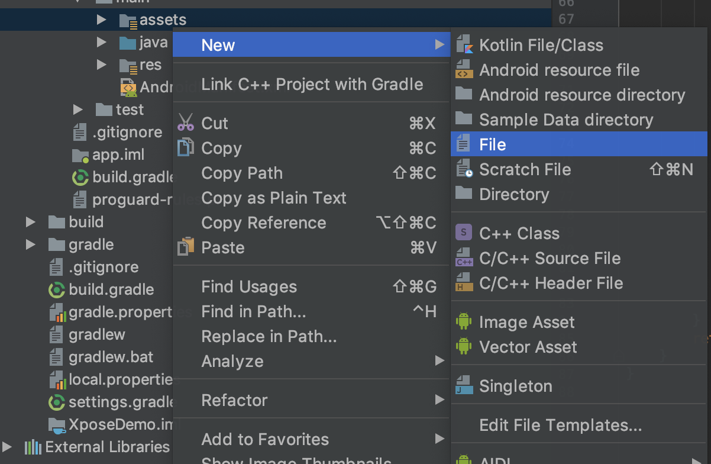

Java层Hook工具，应用较多的有Xposed和Friday；so层Hook工具常用Substrate。
Frida：
动态插桩工具，使用Python、JavaScript共同完成。主要hook逻辑在JavaScript中完成，Python脚本负责将JS脚本传递给Android系统中的frida-server。
frida需要在root环境下执行，在移动端安装frida-server服务，并将设备连接至服务端。服务端需配置Linux环境和SDK PlatformTools，配置adb和fastboot环境变量。
与Xposed相比，Frida更改hook程序后无需重启系统，可直接重写方法体。Frida还可以hookNative层函数。
Xposed:
主要用于监控APP行为,改变原程序逻辑，沙箱定制（主要关注反环境检测）；
hook重载方法时，可忽略参数，使用hookAllMethods()，对于多个构造方法的hook，可使用hookAllConstructors()方法。
由于dalvik环境下xposed对multidex的支持没有很好的通用解决方案，寻找目标函数会发生ClassNotFoundError，所以处理multidex需要一些技巧（Tips）: 此问题因为classloader出错引起的，所以要寻找attachBaseContext 的classloader，而非lpparam.classLoader（此思路来自非虫前辈）。
Frida配置
这里介绍Android中Frida的环境配置。分为服务端和客户端两个部分。
一、环境准备
1.1 客户端配置
客户端的配置是在PC端，需要首先安装Python环境，配置pip模块。然后，执行命令：
1 | pip install frida |
然后执行pip list查看是否安装成功。
1.2 服务端配置
服务端配置是在Android端。
首先，查看测试机的CPU架构：
1 | adb shell cat /proc/cpuinfo |
结果显示：
即为ARM64.
然后，下载与客户端frida对应版本、与测试机架构相同的frida-server压缩包。
地址： https://github.com/frida/frida/releases
注意：服务端frida-server版本与客户端frida版本必须相同才能正常运行。
下载之后，解压，并将解压得到的文件传入测试机/data/local/tmp目录下。
1 | adb push frida-server /data/local/tmp *# adb push 参数1 参数2* |
注意：最好使用真机，模拟器会因为架构兼容模式从而使得程序报错。
执行frida-servcer: ./freda-server
另起一个终端，配置端口转发： adb forward tcp:27043 tcp:27043
执行frida-ps -U测试是否启动成功，如图：
至此，frida环境配置和启动完成。
二、模块编写
可以使用JS或Python编写hook脚本，示例可以参考官方文档https://frida.re/docs/examples/android/。具体编写示例会在后续博客中详述。
若使用JS hook，只需执行： frida -U -f hookpackagename -l test.js --no-pause。
若使用Python，则直接执行python3 test.py即可。
Xposed Hook配置
一、Xposed安装
1.1 模拟器
模拟器采用网易MuMu，Android版本号6.0.1
1.2 Xposed安装包下载
下载地址：https://forum.xda-developers.com/showthread.php?t=3034811
下载如下图所示安装包：
1.3 安装
直接把安装包拖入到MuMu模拟器中即可。
1.4 激活Xposed框架
1.4.1 关闭应用兼容性
Xposed激活需要关闭MuMu设置中的应用兼容性，操作步骤如下：
打开设置，找到应用兼容性，关闭按钮，使其处于灰色状态

1.4.2 激活Xposed框架
打开“Xposed Installer”应用，点击下图表识先进行下载。
下载完成会跳出如下界面，如没有跳出，请再点击一下
1.4.3 重新开启应用兼容性
重新开启“应用兼容性”，使模拟器能同时运行x86软件和arm软件。
步骤一：打开设置，找到应用兼容性
步骤二：点击按钮，使其处于绿色状态，即开启状态
二、Xposed模块编写
2.1 配置AndroidManifest.xml
- 使用Android Studio新建一个Android工程
- 然后在AndroidManifest.xml中插入如下代码
1 | <meta-data |
2.2 配置build.gradle
在build.gradle中添加如下代码：
1 | repositories { jcenter()} |
以及
1 | compileOnly 'de.robv.android.xposed:api:82'compileOnly 'de.robv.android.xposed:api:82:sources' |
这句代码是告诉AndroidStuido使用jcenter作为代码仓库，从这个仓库里远程寻找 de.robv.android.xposed:api:82 这个API。这个网上很少有Xposed教程介绍它的！（我们不用自己找XposedBridgeApi.jar了。注意！此处要用compileOnly这个修饰符！网上有些写的是provide ，现在已经停用了！）
插入位置如下图，
2.3 Hook 实践
2.3.1 创建Button
创建一个Button控件，用于测试Hook
在MainActivity中写入如下代码
1 | import android.support.v7.app.AppCompatActivity; |
2.3.2 测试为hook代码
测试代码，运行后点击Button控件
2.3.3 hook代码编写
在MainActivity的同级路径下新建一个类“HookTest.java”，代码如下：
1 | import de.robv.android.xposed.IXposedHookLoadPackage; |
2.3.4 添加入口点
- 新建assets 文件夹
右键点击 “main ” 文件夹 ， 选择new –> Folder –>Assets Folder，输入文件夹名为assets，如下图所示：
新建后结构如下图：
- 新建xposed_init文件,在assets文件夹下新建xposed_init文件，如下入所示

- 配置xposed_init
在xposed_init文件中输入hook代码的类名，类名需要写全路径（即包名+类名）。如下图是我编写的HookTest类，全路径为com..wanbang.xposedome.HookTest,
因此在xposed_init写入如下全路径
2.3.5 禁用 Instant Run
单击File -> Settings -> Build, Execution, Deployment -> Instant Run，把勾全部去掉(该路径为Mac系统的路径，其他系统可查找相应路径)，具体如下图所示：
注意：每次修改代码都需重启Xposed
Cydia Hook 配置
一、环境准备
1.1 模拟器
经测试Substrate的apk包在很多模拟器中都无法正常运行，此处使用Genymotion的Google Nexys4 机型。
1.2 相关包下载
apk包：http://www.cydiasubstrate.com/
sdk下载：http://asdk.cydiasubstrate.com/zips/cydia_substrate-r2.zip
apk包下载后，安装至模拟器中，授予root权限。打开应用，如图：

二、模块编写
2.1 java层hook
2.1.1 配置AndroidManifest.xml
（1）增加权限：
1 | <uses-permission android:name="cydia.permission.SUBSTRATE"/> |
（2）Application标签中增加：
1 | <meta-data android:name="com.saurik.substrate.main" android:value=".Main"/> |
注：此处.Main文件是模块的入口文件，完成路径为：’packageName’.Main

2.1.2 导入jar包
将下载的sdk包解压缩，取出substrate-api.jar，放在libs目录下，并Add As Library
2.1.3 编写hook代码
在Main类中添加方法：
1 | static void initialize() { // ... code to run when extension is loaded } |
具体的hook代码可以写在这个方法中。
如，hook TelePhonyManager中的getDeviceId()方法：
1 | public class Main { |
2.2 Native层hook
2.2.1 相关文件导入和新建
（1）在src/main目录下新建目录jni

（2）向目录中添加Cydia sdk包中的.h头文件和两个.so库；（由于测试环境为模拟器，因此仅放了x86类型的so文件）
（3） 在jni目录下新建.cpp文件，
本例中为module.cpp：
1 |
|
（4）生成Android.mk：Build -> Make Project ，会报错，但不用管 。进入：app/build/intermediates/ndk/debug目录，取出Android.mk，放在src/main/jni目录下。
2.2.2 相关配置
（1）build.gradle

defaultConfig内：
1 | externalNativeBuild { |
android内：
1 | externalNativeBuild { |
（2）拷入CMakeLists.txt，放在与build.gradle同级目录下（即app目录下）
注意：生成的module必须以.cy为后缀
1 | # For more information about using CMake with Android Studio, read the |
引入第三方的头文件，需要指定其路径：

引入的第三方库，需要在CMakeLists中指定名字和路径：

3）AndroidManifest.xml配置：
添加权限：
<uses-permission android:name="cydia.permission.SUBSTRATE" />
Application标签的属性：android:hasCode="false"